¿Qué es la esteganografía?
La esteganografía consiste en ocultar información dentro de otro mensaje u objeto físico para evitar su detección. Puede utilizarse para encubrir cualquier tipo de contenido digital, como texto, imágenes, videos o audios, que luego se extrae en el destino. En ocasiones, el contenido oculto mediante esteganografía se cifra antes de ser incrustado en otro formato de archivo. Si no se cifra, puede procesarse para dificultar su detección.
Aunque se compara con la criptografía, la esteganografía no implica codificar los datos ni usar una clave para descodificarlos. El término "esteganografía" proviene del griego "steganos" (oculto o cubierto) y "graphein" (escritura). Ha sido practicada durante miles de años para mantener la privacidad de las comunicaciones, como en la antigua Grecia, donde se grababan mensajes en madera y se cubrían con cera, o en Roma, donde se usaban tintas invisibles. En ciberseguridad, la esteganografía es crucial, ya que se utiliza para ocultar información durante ataques, como los realizados por grupos de ransomware. Datos, herramientas maliciosas o instrucciones pueden esconderse en archivos de imagen, video, sonido o texto que parecen inofensivos.
¿Cómo funciona la esteganografía?
La esteganografía consiste en ocultar información de manera que no se levanten sospechas. Una técnica común es la de "bits menos significativos" (LSB), que incrusta información secreta en los bits menos significativos de un archivo multimedia. Por ejemplo:
- En una imagen, cada píxel tiene tres bytes de datos para los colores rojo, verde y azul, y algunos formatos añaden un cuarto byte para la transparencia o "alfa".
- La esteganografía de LSB modifica el último bit de cada byte para ocultar un bit de datos. Así, para ocultar un megabyte de datos, se necesitaría una imagen de ocho megabytes.
- Modificar el último bit del píxel no produce un cambio perceptible, por lo que la imagen original y la modificada son indistinguibles a simple vista.
Otra técnica es la sustitución de palabras o letras, donde se oculta el texto distribuyéndolo dentro de
otro texto más grande y colocando las palabras a intervalos específicos. Aunque fácil de usar, este
método puede hacer que el texto parezca incoherente.
Otros métodos incluyen ocultar una partición entera de un disco duro o incrustar datos en la sección de
encabezado de archivos y paquetes de red. La eficacia de estos métodos depende de la cantidad de datos
que pueden ocultar y lo difícil que sean de detectar.
Tipos de Esteganografía
Desde una perspectiva digital, existen cinco tipos principales de esteganografía:
- 1. Esteganografía de Texto: Consiste en ocultar información en archivos de texto. Esto incluye cambiar el formato de un texto existente, modificar palabras, usar gramática sin contexto para generar textos legibles o crear secuencias de caracteres aleatorias.
- 2. Esteganografía de Imagen: Involucra ocultar información en archivos de imagen. Las imágenes digitales son populares para este propósito debido a la gran cantidad de elementos en su representación, lo que permite varias formas de ocultación.
- 3. Esteganografía de Audio: Consiste en incrustar mensajes secretos en una señal de audio, modificando la secuencia binaria del archivo de audio. Este proceso es más complejo en comparación con otros métodos debido a la naturaleza del sonido digital.
- 4. Esteganografía de Video: Los datos se ocultan en formatos
digitales de video, permitiendo ocultar grandes cantidades de información en un flujo de
imágenes y sonidos. Existen dos métodos principales:
Incrustar datos en video sin comprimir y luego comprimirlos.
Incrustar datos directamente en el flujo de datos comprimidos. - 5. Esteganografía de Red: También conocida como esteganografía de protocolo, se basa en incrustar información en los protocolos de control de red utilizados en la transmisión de datos, como TCP, UDP e ICMP.
Comparación entre esteganografía y criptografía
La esteganografía y la criptografía comparten el mismo objetivo: proteger un mensaje o información de terceros, pero emplean mecanismos diferentes para lograrlo. La criptografía convierte la información en texto cifrado, comprensible solo mediante una clave de descifrado. Esto implica que, si alguien intercepta el mensaje cifrado, notará fácilmente que se ha aplicado un cifrado. En contraste, la esteganografía no altera el formato de la información, sino que oculta la existencia del mensaje.
Usos de la esteganografía
En tiempos recientes, la esteganografía se utiliza principalmente en computadoras, donde los datos digitales son las operadoras y las redes los canales de propagación de alta velocidad. Entre sus usos se incluyen:
- Evitar la censura: Permite enviar información sin que sea censurada ni rastreada hasta el remitente.
- Marca de agua digital: Crea marcas de agua invisibles que no distorsionan la imagen, permitiendo rastrear su uso no autorizado.
- Protección de información: Utilizada por fuerzas de seguridad y organismos gubernamentales para transmitir información confidencial sin levantar sospechas.
Esteganografía para realizar ataques
Desde el punto de vista de la ciberseguridad, los atacantes pueden usar la esteganografía para incrustar datos maliciosos en archivos que parecen inofensivos. Dado que la esteganografía requiere esfuerzos y características específicas para funcionar correctamente, su uso suele estar a cargo de atacantes avanzados con objetivos definidos. Algunas maneras en que se pueden realizar ataques mediante esteganografía incluyen:
- Ocultamiento de cargas útiles maliciosas en archivos multimedia digitales: Las imágenes digitales son objetivos principales debido a la gran cantidad de datos redundantes que pueden manipularse sin alterar perceptiblemente su apariencia. Dado su uso generalizado, los archivos de imágenes rara vez levantan sospechas de actividad maliciosa. Los videos, documentos, archivos de audio e incluso las firmas de correo electrónico también ofrecen medios alternativos para aplicar esteganografía y infiltrar cargas maliciosas.
- Ransomware y exfiltración de datos: Los grupos de ransomware han descubierto que la esteganografía les permite ejecutar sus ataques de manera más efectiva. También puede utilizarse en la exfiltración de datos durante un ciberataque, ocultando información confidencial en comunicaciones legítimas y permitiendo la extracción de datos sin ser detectados. Con la exfiltración de datos convirtiéndose en un objetivo principal de los ciberataques, los especialistas en seguridad están mejorando las medidas para detectar la extracción de datos, a menudo mediante la supervisión del tráfico de red cifrado.
- Ocultamiento de comandos en páginas web: Los atacantes pueden ocultar comandos para sus implantes en páginas web mediante el uso de espacios en blanco y registros de depuración publicados en foros. Pueden cargar datos robados de forma encubierta en imágenes y mantener la persistencia almacenando el código cifrado en ubicaciones específicas.
- Publicidad maliciosa: Los atacantes pueden aprovechar la esteganografía en campañas de publicidad maliciosa, incrustando código malicioso en anuncios de banner en línea. Al cargarse, estos anuncios extraen el código malicioso y redirigen a los usuarios a una página de inicio de kits de exploits.
Práctica ocultamiento de información usando Esteganografía.
Para esta práctica se hara uso de la herrmienta Stego
Paso 1: Se actualizan los repositorios de paquetes del sistema operativo Ubuntu para asegurar que se estén utilizando las versiones más recientes de los programas disponibles.
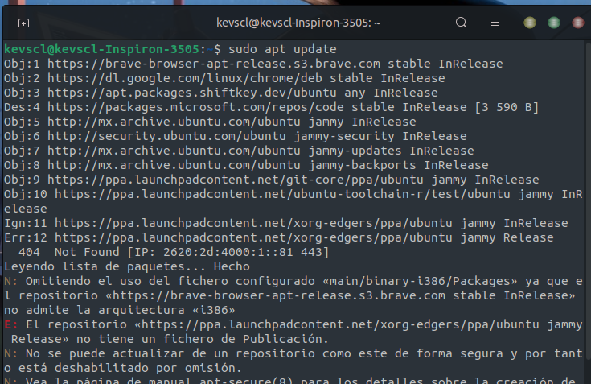
Paso 2: Instalación de Python 3
Se instala la versión 3 de Python en el sistema. Python es un lenguaje de programación ampliamente
utilizado y es necesario para ejecutar scripts y programas Python.
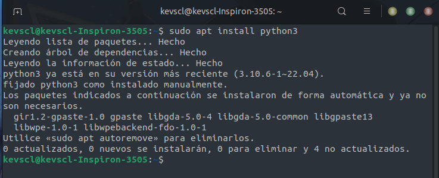
Paso 3: Instalación de pip para Python 3
Pip es el sistema de gestión de paquetes de Python y se utiliza para instalar y gestionar bibliotecas y
paquetes adicionales de Python. Aquí se instala pip específicamente para Python 3.
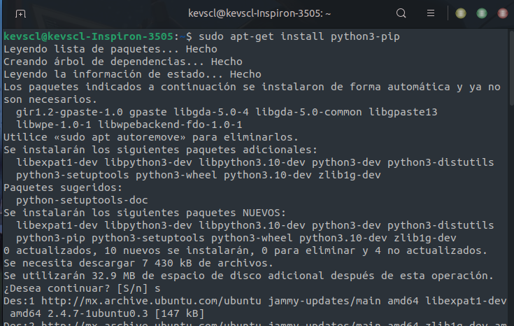
Paso 4: Clonar el repositorio de Steganography desde GitHub
Se clona el repositorio de Steganography desde GitHub utilizando el comando git clone. Esto descarga el
código fuente del proyecto a la máquina local.
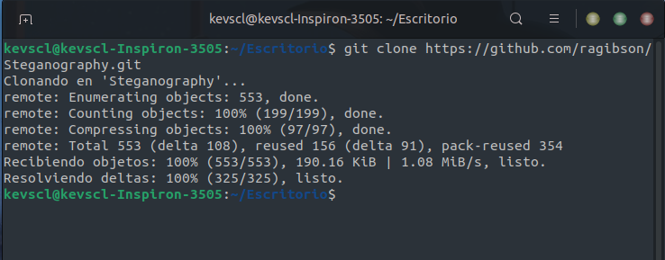
Paso 5: Instalación del paquete Python desde el directorio clonado
Se navega al directorio del repositorio clonado y se ejecuta el script setup.py para instalar el paquete
Python en el sistema. Esto hará que los comandos asociados con Steganography estén disponibles para su
uso en el sistema.
En caso de error, seguir los siguientes pasos, caso contrario, prosiga con el paso 7:
python3 setup.py install
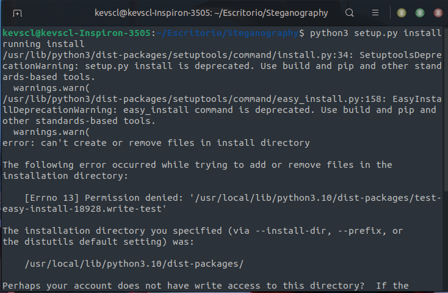
Paso 6: Crear y activar un entorno virtual
Se crea un entorno virtual de Python utilizando el módulo venv. Un entorno virtual es un ambiente
aislado donde se pueden instalar paquetes y dependencias de Python sin interferir con otros proyectos.
Luego se activa este entorno virtual.
source practica/bin/activate
cd Steganography
python setup.py install
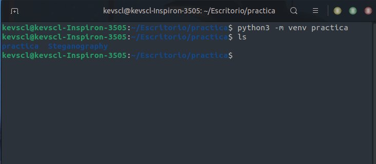 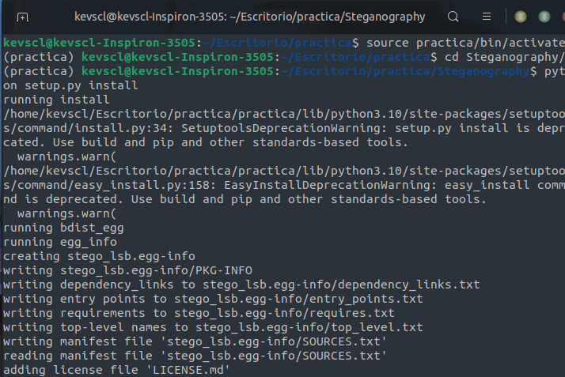
Paso 7: Navegar al directorio de Steganography
Se cambia el directorio de trabajo al directorio que contiene las herramientas de esteganografía.
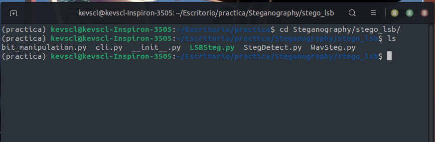
Paso 8: Mostrar ayuda para el comando wavsteg
Se muestra la información de ayuda para el comando wavsteg, que se utiliza para ocultar y recuperar
datos en archivos de audio WAV.
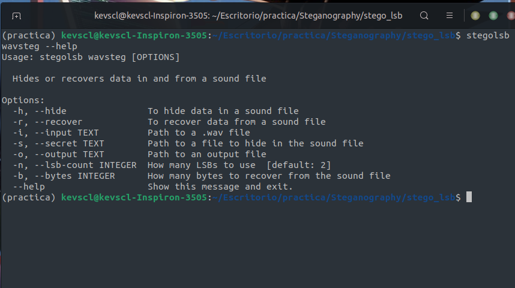
Paso 9: Crear un archivo de texto de prueba
Se crea un archivo de texto llamado prueba.txt utilizando el comando cat y se escribe el texto "hola
mundo desde ubuntu" en él.
Se utiliza el comando ls para mostrar todos los archivos en el directorio actual.
hola mundo desde ubuntu
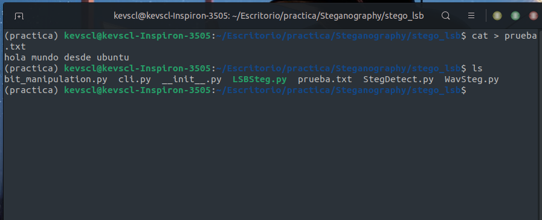
Paso 10: Ocultar texto en un archivo de audio WAV
Se utiliza el comando stegolsb wavsteg para ocultar el texto del archivo prueba.txt dentro de un archivo
de audio WAV llamado Kingdom.wav. El archivo de audio resultante se guarda como sound.wav
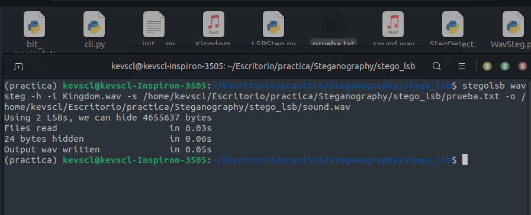
Paso 11: Recuperar texto oculto de un archivo de audio WAV
Se utiliza el comando stegolsb wavsteg con la opción -r para recuperar el texto oculto del archivo de
audio WAV sound.wav y se guarda en un archivo de texto llamado sample.txt.
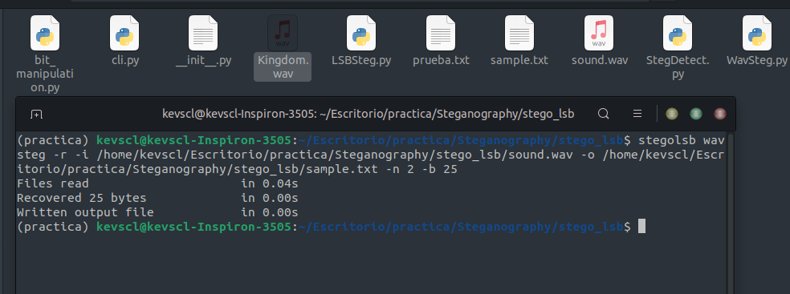
Paso 12: Mostrar el contenido del archivo de texto recuperado
Se utiliza el comando cat para mostrar el contenido del archivo de texto sample.txt que contiene el
texto recuperado del archivo de audio.
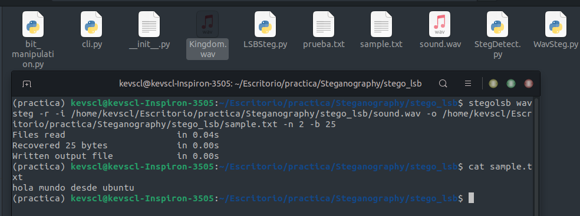
Paso 13: Mostrar ayuda para el comando steglsb
Se muestra la información de ayuda para el comando steglsb, que se utiliza para ocultar y recuperar
datos en imágenes PNG.
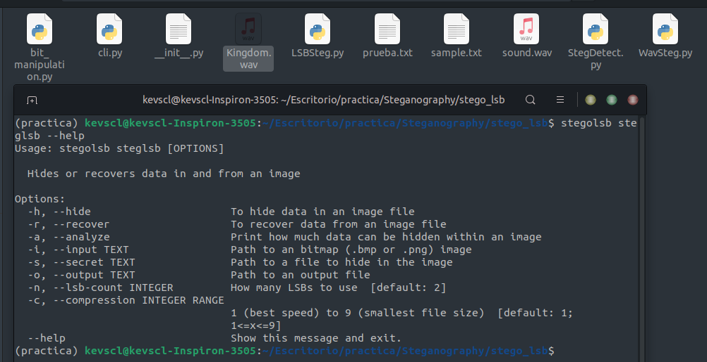
Paso 14: Comprimir un archivo de texto en formato RAR
Se utiliza el comando rar a para comprimir el archivo de texto prueba.txt en un archivo RAR llamado
prueba.rar.
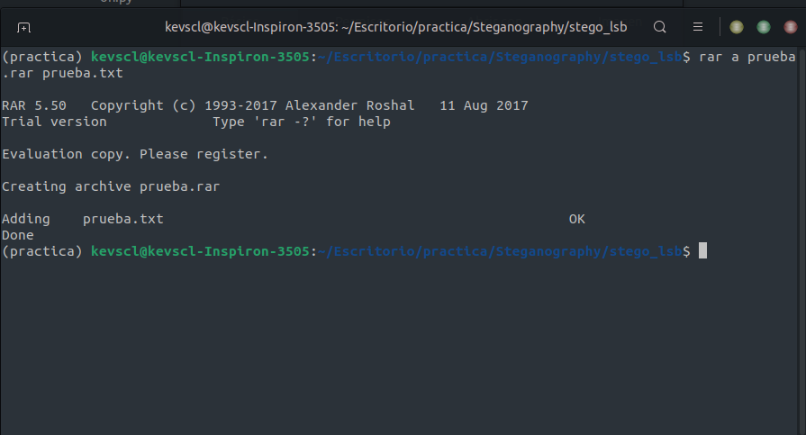
Paso 15: Ocultar el archivo RAR en una imagen PNG
Se utiliza el comando stegolsb steglsb para ocultar el archivo RAR prueba.rar dentro de una imagen PNG
llamada anime.png. El resultado se guarda como output.png.
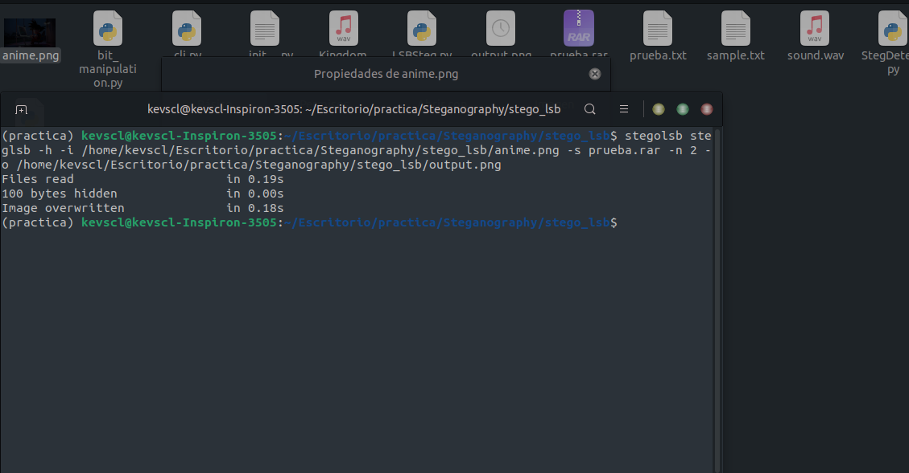
Paso 16: Comparar las propiedades de las imágenes anime.png y output.png
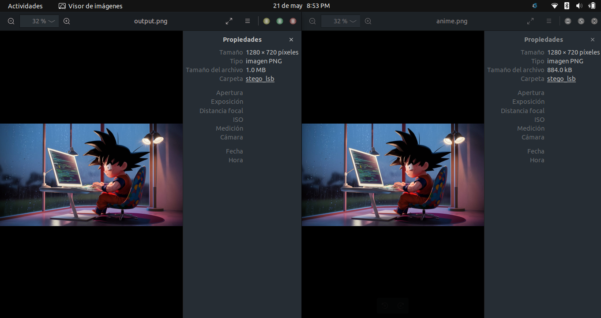
Paso 17: Recuperar el archivo RAR oculto de la imagen PNG
Se utiliza el comando stegolsb steglsb con la opción -r para recuperar el archivo RAR oculto del archivo
PNG output.png y se guarda como un archivo ZIP llamado output.zip.
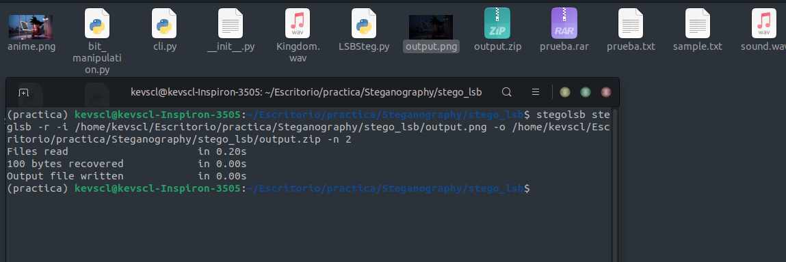
Paso 18: Mostrar archivos ZIP generados
Se utiliza el comando ls con el patrón *.zip para mostrar todos los archivos ZIP en el directorio
actual.
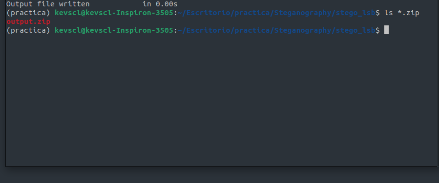
Paso 19: Descomprimir el archivo ZIP generado y abrir el archivo de texto
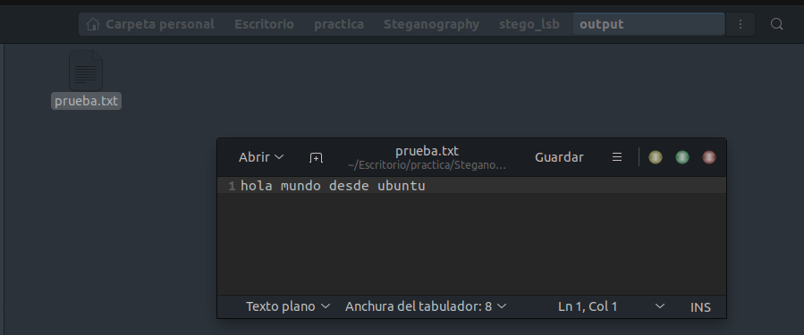Referencias
- 12. Entornos virtuales y paquetes. (s. f.). Python Documentation. https://docs.python.org/es/3/tutorial/venv.html
- G, A. E. (2019, 8 junio). 7 herramientas de esteganografía para enviar mensajes secretos usado por gobierno. Noticias de Seguridad Informática, Ciberseguridad y Hacking. https://noticiasseguridad.com/tutoriales/como-usar-esteganografia-para-enviar-mensajes-secretos/
- ¿Qué es la esteganografía? Definición y explicación. (2023, 19 abril). latam.kaspersky.com.https://latam.kaspersky.com/resource-center/definitions/what-is-steganography